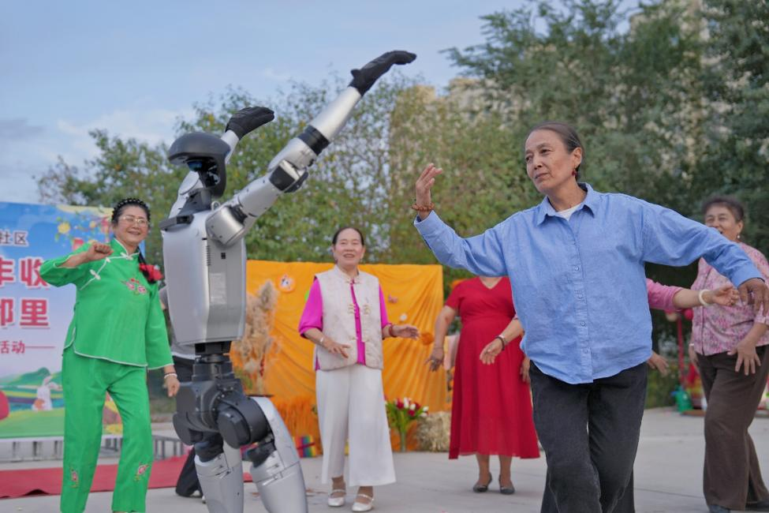
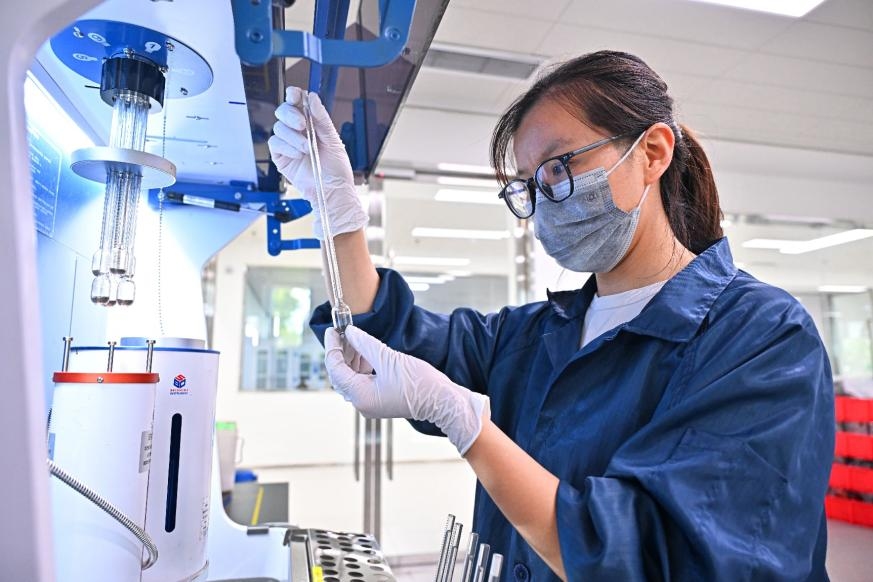

En la IFA de Berlín se exhibieron robots humanoides chinos —que ya se están integrando en escenarios de aplicación reales— y productos para el hogar inteligente equipados con sensores proactivos y servicios de inteligencia artificial colaborativa.
Hace poco, la industria de los teléfonos inteligentes vivió una «supersemana de lanzamientos» de dispositivos plegables. Huawei, Xiaomi y Apple presentaron sus respectivos productos estrella en un lapso de 72 horas, enfrentando a las principales marcas chinas e internacionales en una misma categoría y generando un intenso debate. Estos episodios ya no son casos aislados; reflejan una transformación industrial más amplia.
Hace décadas, la base manufacturera de China estaba relativamente poco desarrollada. En muchos sectores, el país comenzó tarde, situándose por detrás de los líderes mundiales en tecnologías avanzadas, capacidad para establecer estándares e, incluso, en conceptos fundamentales de diseño.
Competir en las mismas condiciones
En sus inicios, su estrategia se basó en gran medida en la imitación y en mejoras graduales. Hoy, esa realidad ha cambiado por completo. Desde la inteligencia artificial y los vehículos de nuevas energías hasta la robótica y la reutilización en la industria aeroespacial, China compite ahora en igualdad de condiciones —o incluso lidera— en numerosos ámbitos. En terrenos antes inexplorados, el país ha surgido tanto como pionero como referente en el establecimiento de normas.
Estos avances son el resultado del poder acumulado de la innovación científica y tecnológica. Tomemos como ejemplo la industria de los teléfonos inteligentes: son, en última instancia, tecnologías de vanguardia exclusivas las que han permitido a las marcas chinas adentrarse en el segmento de gama alta. Superar los niveles inferiores de las cadenas industriales y de valor implica un arduo proceso de crecimiento, que conlleva el desarrollo constante de la competitividad de marca y la creación de «fosos» tecnológicos —ventajas competitivas difíciles de replicar—.

Nada de esto habría sido posible sin un ecosistema de innovación altamente coordinado. Las cifras hablan por sí solas. La Organización Mundial de la Propiedad Intelectual publicó recientemente su informe sobre los 100 principales polos de innovación a nivel global, como parte del Índice Mundial de Innovación 2026. China alberga 25 de estos 100 polos, situándose a la cabeza por cuarto año consecutivo. El clúster de Shenzhen-Hong Kong-Guangzhou ocupó el primer puesto por segundo año consecutivo. Como piedra angular del ecosistema nacional de innovación de China, estos polos regionales de innovación reflejan el crecimiento constante de la capacidad de China para la innovación científica y tecnológica.
El progreso se sustenta en prioridades estratégicas claras: el apoyo estatal al avance científico-tecnológico, el desarrollo de capacidades industriales avanzadas y adaptadas al contexto local, y la implementación de incentivos políticos específicos.
Reserva de talento
Igualmente importante es la gran escala y el dinamismo del mercado interno del país, que genera diversos escenarios de aplicación para realizar pruebas iterativas y procesos de comercialización.
Como base de todo ello, existe una reserva de talento cada vez mayor, impulsada por una integración más estrecha entre el ámbito educativo, la investigación y la industria; un círculo virtuoso que mejora continuamente la calidad y la distribución de profesionales cualificados.

Todos estos esfuerzos fundamentales fomentan la innovación y la creatividad, generando un impulso para un desarrollo de alta calidad. No obstante, una comprensión más precisa del funcionamiento del modelo de desarrollo chino —basado en la innovación— dificulta el mantenimiento de ciertos conceptos erróneos.
Durante años, algunos responsables políticos y medios de comunicación han difundido advertencias sobre un supuesto «choque chino 2.0» (China Shock 2.0), atribuyendo el avance de China en la manufactura de alta gama a los subsidios industriales, lo que ha contribuido a generar inquietud.
En la práctica, China funciona
como 'el gimnasio
más inteligente del mundo'
En la práctica, como señaló un observador internacional, China funciona como «el gimnasio más exigente del mundo». La competencia y la innovación están integradas en su modelo de desarrollo. Lejos de provocar un «choque» disruptivo, el progreso de China amplía las oportunidades a nivel global; en lugar de desplazar a los competidores extranjeros, a menudo crea nuevos mercados y capacidades.
Las pruebas son cada vez más evidentes. Volkswagen ha ajustado sus planes de investigación y desarrollo (I+D) en su sede central de Wolfsburgo, tomando como referencia el modelo de su centro de I+D en Hefei, en la provincia china de Anhui (este del país). Por su parte, los modelos chinos de inteligencia artificial han ocupado el primer puesto durante 20 semanas consecutivas en cuanto a su uso a nivel mundial entre los grandes modelos de IA.
En un contexto en el que una nueva revolución científico-tecnológica y una transformación industrial convergen con la histórica transición del modelo de desarrollo de China, el país sigue avanzando en materia de innovación, con el objetivo de consolidarse como un referente mundial en innovación científica y tecnológica. Gracias a este terreno tan fértil para el desarrollo, China continuará, sin duda, sorprendiendo al mundo con su capacidad de innovación.